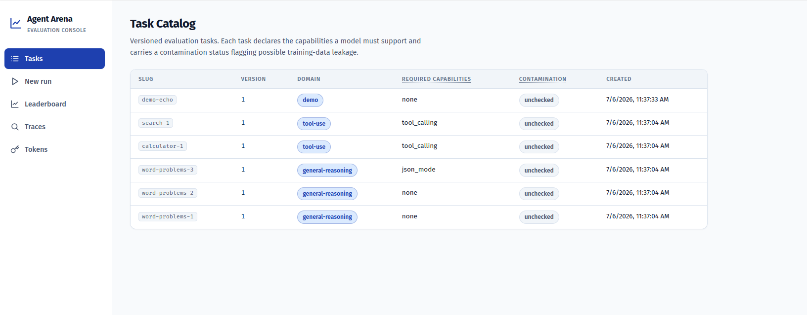

Which model earns its keep?
Measure cost per correct answer.
Agent Arena runs the same task, agent strategy, and scoring rubric across every provider and model you care about — then ranks them by what actually matters: how many dollars each correct answer costs.

The Console
The five tabs, and why each exists
The sidebar follows the evaluation workflow left to right: define what to test, run it, compare results, drill into the evidence, and automate it all.
Tasksthe question bank
The catalog of versioned evaluation problems. Tasks are immutable — editing one creates a new version — so a score always refers to an exact, reproducible challenge.
- Domain — the capability area probed: tool-use tasks require calling external tools; general-reasoning tasks test unaided problem solving.
- Required capabilities — provider features a model must support (
tool_calling,json_mode) to attempt the task fairly. - Contamination — a training-data-leakage flag. unchecked means no review has run yet; treat suspiciously perfect scores on unchecked tasks with care.
New runlaunch an evaluation
Pick a task (what to test), an agent (the prompt-and-tool strategy wrapped around the model), and a rubric (the versioned scoring definition), then fan out across one or more provider/model pairs.
- One run is created per provider/model pair — all against identical conditions, so their results are directly comparable.
- Run statuses (queued → running → complete / failed) refresh live every three seconds.
Leaderboardthe verdict
Scored results per provider/model configuration, ranked by CPCA — cost per correct answer — with 95% confidence intervals so small samples can't masquerade as certainty. A KPI strip summarizes configurations, models compared, correct answers, and total spend.
- Table view — every metric per configuration (all defined below).
- Pareto view — the cost-versus-accuracy tradeoff; see the Pareto section below.
Tracesthe evidence
Every recorded model interaction, with token usage, cost, latency, and tool calls. Inspecting a trace replays the full turn-by-turn conversation — prompts, tool calls, tool results, final answer.
- Re-scoring — apply a different rubric to a stored trace. The interaction is replayed from the record: no new LLM calls, no new spend.
- Aggregates are only trustworthy because every number traces back to evidence here.
Tokensprogrammatic access
API tokens for CI pipelines and scripts (the local console itself doesn't need one). Secrets are shown exactly once and stored only as a hash; revocation takes effect on the very next request.
- viewer — read results only. runner — also create runs and refresh aggregates. admin — additionally manage tokens.
- Grant the least role that does the job.
The Metrics
Every number, defined
Each leaderboard row is one configuration: an agent, a task, a rubric, and a provider/model pair. These are the numbers reported for it — and why they matter.
CPCA — Cost Per Correct Answer
total spend ÷ correct answersThe headline ranking metric. It rewards models that are both cheap and right — a bargain model that is usually wrong still ranks poorly, because its few successes carry all its cost.
Why it matters — it is the number a budget owner actually pays per useful result. Undefined when a configuration got nothing right ("no correct answers").Accuracy
correct ÷ total attempts · 95% CIShown as 4/4 (100% to 100%): the raw pass count, then a 95% bootstrap confidence interval (1,000 resamples, deterministically seeded).
Mean score
average rubric score, 0–1The continuous rubric result, averaged. Unlike pass/fail accuracy it grants partial credit, separating "nearly right" from "completely wrong".
Why it matters — two models with equal accuracy can differ sharply in how close their failures were.Total cost
Σ estimated cost per attemptSpend across all attempts, from per-token provider pricing. Cached tokens bill at the discounted cached rate; local models bill by wall-clock runtime instead.
Why it matters — the raw budget consumed by the evaluation cell, before any quality adjustment.p50 / p95 latency
50th / 95th percentile, msMedian response time is the typical experience; p95 is what the slowest one-in-twenty attempts look like.
Why it matters — interactive products live and die by p95, not the median. A model can feel fast on average and still time out your users.Tokens in / out
prompt vs completion tokensTokens sent to the model versus tokens it generated, summed over every turn of the agent loop (cached tokens tracked separately in the trace detail).
Why it matters — the primary driver of cost, and a tell for prompt bloat or rambling completions.Tool calls
Σ tool invocations per traceHow many times the agent invoked an external tool during the interaction.
Why it matters — a rough measure of how much the model leaned on tools rather than answering directly; spikes often explain latency and cost outliers.Score vs Correct (per trace)
continuous 0–1 vs binary pass/failEach trace carries both: the rubric's continuous score, and the binary verdict that feeds accuracy and CPCA. Rubrics needing an LLM judge record which model judged.
Why it matters — the binary bar ranks models; the continuous score explains the ranking.Contamination status
unchecked · clean · flaggedWhether a task has been reviewed for training-data leakage — i.e. whether the model may have seen the answer during training.
Why it matters — a contaminated task measures memory, not capability. "unchecked" is a caution label, not a pass.The Tradeoff
Reading the Pareto view
The leaderboard's second mode plots every configuration on the two axes that fight each other: mean cost per task, and accuracy.
The Pareto frontthe rational shortlist
A configuration is on the front when no other is both cheaper and at least as accurate. Front rows are the only rational picks at some budget; every other row is beaten on both axes at once.
- Mean cost per task divides spend by every attempt, right or wrong — the honest cost axis. (CPCA divides by correct answers only, which is why the two differ.)
- Dominated rows are dimmed, not hidden — the tradeoff only means something when you can see the losing configurations and by how much they lose.